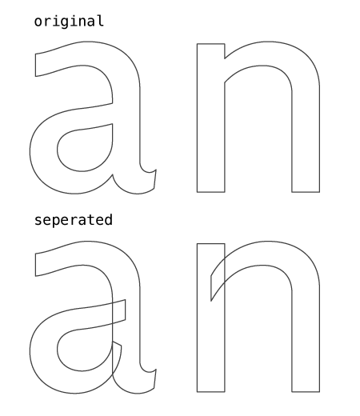
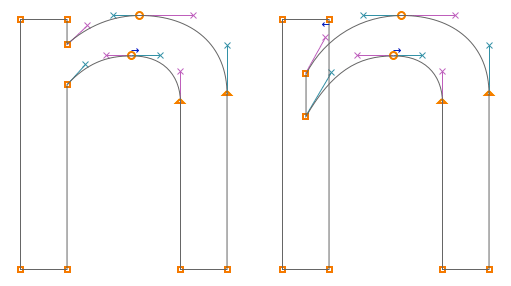
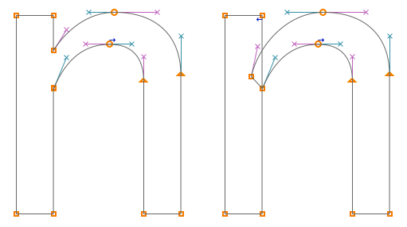
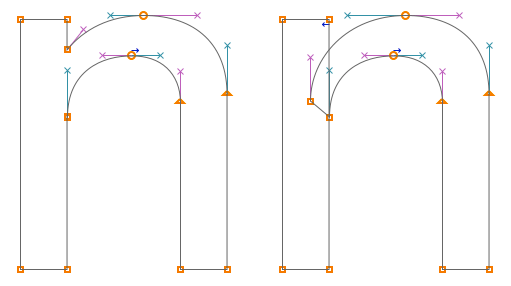
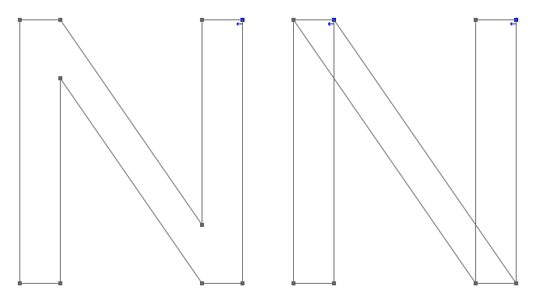
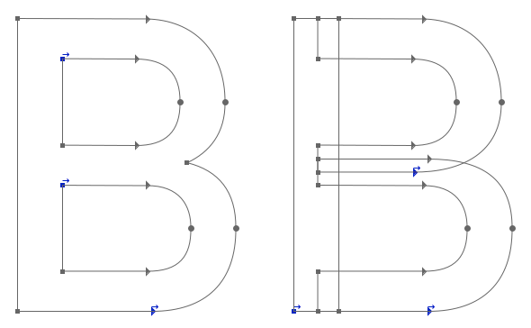
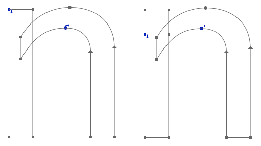
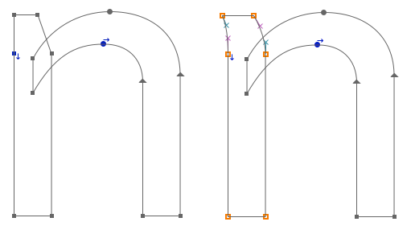
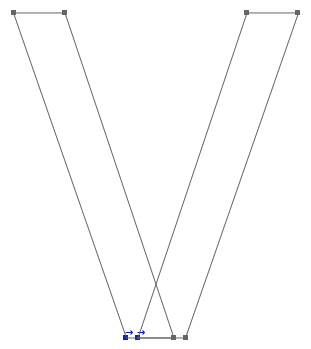
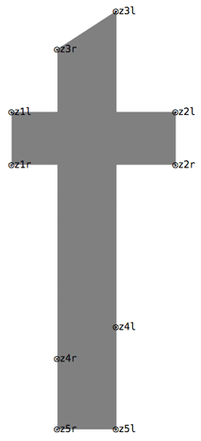

1. Click a blank point.
2. Enter the point name.
3. Save
Metapolator requires UFOs where shapes are broken up into constituent parts or 'strokes'.

Almost all glyphs contain composite shapes which will require splitting up into seperate 'strokes'. Here are some examples:





An extra z-point pair is required preceding/following (depending on ordering) the z-point where a stemcut will be applied.

An 'n' before and after adding an extra point pair for stemcuts

An 'n' with a stemcut and stemshift applied to the top z-point. The example on the right also has a down function at the 2nd point to create a smooth transition
An inktrap is similar to a stemcut as they also requre an extra z-point.
The z-point pair should be parallel to the other z-point pairs; in this case the points are horizontal.


Currently every on-curve point needs to be manually labelled in consecutive pairs in the 'z–l' and 'z–r' format; for example, z1l, z1r, z2l, z2r, and so. Each pair creates a z-point. This is the order in which a stroke will be rendered. A new stroke in the same glyph continues the numbering rather than starting from z1 again.
1. Click a blank point.
2. Enter the point name.
3. Save
Take care to keep the l and r sides consistent with the direction which the pen is travelling – a useful metaphor is to imagine the pen as a car: a sudden reversal in the left and right side probably means disaster!

Due to restrictions within Metafont, the .glif filenames and 'glyph name' (an xml tag within the .glif file) must be renamed according to the numeric filenames set out in glyphnames.txt (also found in the local folder of Metaplator).
Currently this process is done manually but we would like to automate this in the near future
The .glif files are found inside the .ufo/glyphs/ folder. To access, right click on the ufo and 'Show Packaged Contents'.
A .glif file is an xml file that describes the glyph. The <glyph format="1" name="a"> tag must be changed so that it corresponds to the numeric value; for example <glyph format="1" name="65">